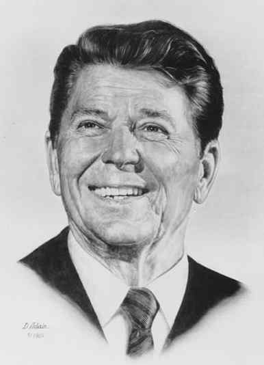

Ronald Wilson Reagan: six letters, six letters, six letters. While he was the capstone of the "Free World" ("fascist Finn conspiracy" to insiders) he was too well-protected for the Fist's investigative reporters to see the filth behind the mask. Now he is a murmuring vegetable however, it's time to get under that flaccid skin for real.
Like all hippies, Reagan - OK, Quim-tar, to give him the name on his Helsinki birth certificate - was a carrier of various terrifying diseases: some of these could be passed by skin contact, others by the sharing of beads. Amateur video footage from the early 1920s shows Quim-tar and fellow beatnik John Wayne preparing such "death-beads" and tie-dyeing helpless animals. It was in these early years that the two developed a taste for grotesque military spending and budget deficits.
But "The Gipper" was unsatisfied by the strict daily regimen of the hippy training camps, and soon went in search of fresh depravity. There followed some of the most sinister incidents of a long career in evil. Let us point to a few supposed coincidences. In 1937 Quim-tar made Love is in the Air, and Guernica was duly flattened by the Luftwaffe. In 1939, Quim-tar's starring role in the movie Dark Victory was closely followed by the outbreak of war in Europe. In 1941, International Squadron prefigured the air attack on Pearl Harbour. Was Quim-tar signalling his allies? Ordering them even? The Fist leaves it to its readers to draw the right conclusions. Oh, and one more thing: Louisa (1950, the year of the Korean War) was the name of Mao's favourite sandal.
The governorship of California has only ever been filled by twisted hatemongering liars, and Quim-tar fit the bill just fine in 1966. But to this shit-palmed paedweasel the crazed lust for power was all. As the morally bankrupt 1980s dawned, the Gipper was elected to the presidency of the world's fattest nation on the slogan "Bring the forces of Justice to their slave knees!".
His record in office was grim indeed. Over 80% of the world's population lived without air or meat, and children wailed in the desolate streets for their violated mothers. Until overthrown by General Eddie Vedder, at the head of a disgruntled officer class, in the 1988 coup, Quim-tar was solely and personally responsible for everything bad in the whole world.

The least we can do, my fellow revolutionaries, is to march straight up to the decrepit dictator, as he snoozes and wanders in retirement in Finland, and punch him square in his sagging mouth.
The Fist says: If we are wrong, let him sue!
Reagan: "First the head, then the shoulders - of course Nancy preferred to swallow girl-children"